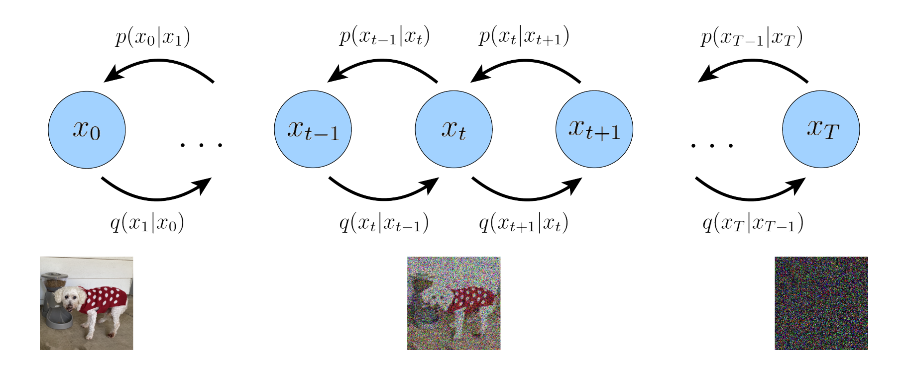
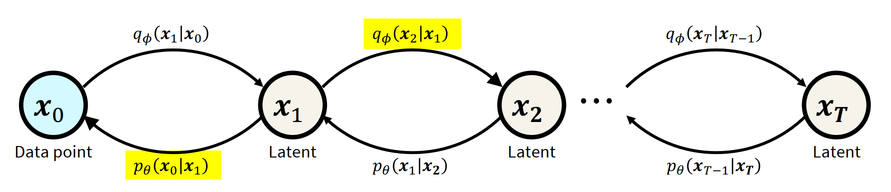

3. Denoising Diffusion Probabilistic Models (DDPM)#
Let us consider a special case of Markovian hierarchical Variational Autoencoders (VAEs), where the latent space has the same dimensionality as the data space. In this setup, the variational posteriors \(q_\phi(x_{t+1}|x_t)\) are not learned but predefined, i.e.,
modeled as a linear Gaussian. The Gaussian parameters of the latent encoders vary over time such that the distribution of the latent at the final time step \(T\) is a standard Gaussian.

Forward process:
where the noise schedule \(\{\beta_t\in (0,1)\}_{t=1}^T\) is monotonically increasing: \(\beta_1\leq\beta_2\leq...\leq\beta_T\). The forward process can be interpreted as gradually adding Gaussian noise over time. There are two common variants of adding noise:
Variance Preserving: \(q(x_t|x_{t-1}) = \mathcal{N}(x_t; \sqrt{1-\beta_t}x_{t-1}, \beta_t \mathbf{I})\), where the goal is to keep the variance very small for each step.
Variance Exploding: \(q(x_t|x_{t-1}) = \mathcal{N}(x_t; x_{t-1}, (\sigma_i^2-\sigma_{i-1}^2)\mathbf{I})\)
Property |
Variance Exploding (VE) |
Variance Preserving (VP) |
|---|---|---|
Noise Schedule |
Variance increases |
Variance ~ stays in [0,1] |
Final Noise Distribution |
\(\mathcal{N}(0, \sigma_{\text{max}}^2 I)\) |
\(\mathcal{N}(0, I)\) |
Score Matching Loss |
Based on Gaussian noise |
Uses closed-form ELBO or reweighted loss |
Sampling Behavior |
More stable, coarse-to-fine |
Requires many steps to avoid collapse |
Common Usage |
Score-based SDEs |
DDPM |
Further more, the \(\beta_t\) can be constant, linearly or quadratically increasing, a cosine function, or learned.
Note: For reverse step \(p_\theta(x_{t-1}|x_t)\) becomes Gaussian only when \(\beta_t\) is small \((\beta_t<<1)\).
Reverse process:
ELBO for Diffusion model#
For the diffusion model the negative Evidence Lower Bound (ELBO) is minimized:
Consistency term#
The consistency term enforces agreement between the forward and reverse transitions at each timestep:

However, this term involves expectations over two random variables, which is computationally expensive. To reduce complexity, the ELBO can be reparameterized using the Markov assumption (\(x_t\) only depends on \(x_{t-1}\)). Hence,
Using this, the ELBO can be rewritten as:
Reconstruction Term#
Reconstruction term resembles the VAE reconstruction loss and can be optimized using Monte Carlo estimation.
Prior Matching Term#
The prior matching term ensures the final noisy state aligns with the standard Gaussian prior. Since both \(q(x_T|x_0)\) and \(p(x_T)\) are predefined, there are no learnable parameters.
Denoising Matching Term#
Denoising matching term minimize the difference between the forward and reverse denoising process by using \(q(x_{t-1}|x_t,x_0)\) as a ground truth for the reverse process.
Forward Convergence#
For forward steps, Under certain assumptions \(q(x_t|x_0)= N(x;0,I)\). How?
From our assumptions about encoder transitions:
Note: Given \(x_1 \sim \mathcal{N}(\mu_1, \sigma_1^2 \mathbf{I})\) and \(x_1 \sim \mathcal{N}(\mu_2, \sigma_2^2 \mathbf{I})\), then
Also, if \(\epsilon_1, \epsilon_2 \sim \mathcal{N}(0,1)\), and \(x_1 = \sigma_1\epsilon_1\), \(x_2 = \sigma_2\epsilon_2\), then
Using the above expression for forward steps,
Using reparameterization trick and \(\epsilon_0, \epsilon_1 \sim N(0,1)\),
Therefore, one can directly model \(x_t\) from \(x_0\) using following Gaussian distribution with using a Markovian chain:
Question: What is \(\lim_{T\to \infty} \bar{\alpha}_T = \lim_{T\to \infty} \prod_{t=1}^T \alpha_t = \lim_{T\to \infty} \prod_{t=1}^T (1- \beta_t)\)?
As \(T\to \infty\), \(\bar{\alpha}_T \to 0\). So \(q(x_T|x_{0}) \to N(x_T; 0, I)\), which shows the convergence of the forward process to a standard Gaussian.
Denoising Matching Term#
The denoising KL term in the ELBO encourages the model distribution \(p_\theta(x_{t-1}|x_t)\) to match the true posterior \(q(x_{t-1}|x_t, x_0)\) for each t.
What is \(q(x_{t-1}|x_{t}, x_0)\)?
Using Bayes’ rule, the Markov property, and above expressions:
The mean \(\tilde{\mu}\) is a function of \(x_t\) and \(x_0\). The covariance is predefined from user defined \(\beta_t\) or \(\alpha_t\). So, \(p_\theta(x_{t-1}|x_t)\) can be modeled as a Gaussian with predefined \(\sigma\) to match \(q(x_{t-1}|x_t,x_0)\), but note that \(p_\theta(x_{t-1}|x_t)\) is not conditioned on \(x_0\).
If \(p(x) = N(x; \mu_p, \sigma^2I)\) and \(q(x) = N(x; \mu_q, \sigma^2I)\), then
Mean Predictor#
How to model the variational distribution \(p_\theta(x_{t-1}|x_t)\)? For \(q(x_{t-1}|x_{t}, x_0)= N(\tilde{\mu}(x_t, x_0), \tilde{\sigma}_t^2 I)\), the variance \(\tilde{\sigma}_t^2\) is not a function of \(x_t\) and \(x_0\). Hence, we can define the variational distribution \(p_\theta(x_{t-1}|x_t)\) as
\(x_0\) Predictor#
Taking a closer look at \(\tilde{\mu}(x_t,\epsilon_t)\), we can also define \(\mu_\theta\) as a function of \(x_t\) and \(\tilde{x}_\theta(x_t,t)\), where \(\tilde{x}_\theta(x_t,t)\) is parametrized using a neural network that seeks to predict \(x_0\) firm the noisy \(x_t\) and time index \(t\).
\(x_t\) is sampled from \(x_0\).
From \(x_t\), predict the expected value of \(x_0\) that would result in sampling \(x_t\) from it through the forward jump.
Note that our goal is to sample \(x_0\) from a standard normal sample \(x_T\) and through latent variables \(x_{T-1}, x_{T-2}, ..., x_1\). But for every \(x_t\), we directly predict the expected value of \(x_0\) from \(x_t\).
\(\epsilon_t\) Predictor#
From the forward jump: \(x_t = \sqrt{\bar{\alpha}_t}x_0 + \sqrt{1-\bar{\alpha}_t}\epsilon_t\). If \(x_t\) and \(x_0\) are given, define \(\epsilon_t\) as
One can also rewrite \(\tilde{\mu}(x_t,x_0)\) as a function of \(x_t\) and \(\epsilon_t\).
From \(x_t\) predict the expected value of \(\epsilon_t\) that would result in a sampling \(x_t\) from \(x_0\) through the forward jump. Although all three interpretations: mean prediction, \(x_0\) prediction, and noise prediction are equivalent, \(\epsilon_t\) predictor is used in practice, since the \(\epsilon_t\) are well normalized and scaled standard normal samples, which makes it easier to train the neural network.
For DDPM ELBO,
The reconstruction term (\(-\mathbb{E}_{q(x_1|x_0)} \left[ \log \; p_\theta(x_0|x_1)\right]\) is same as with VAEs and it is also negligible compared to other loss terms.
The prior matching term (\( D_{KL} (q(x_T|x_0)|| p(x_T))\)) converges to zero when \(T\to \infty\).
The denoising matching term (\(\sum_{t=2}^{T} \mathbb{E}_{q(x_{t}| x_0)} \left[ D_{KL} (q(x_{t-1}|x_{t}, x_0)|| p_\theta(x_{t-1}|x_{t}))\right]\)) is the only prominent term, which can also be written as
Training DDPM#
Repeat:
Take a random \(x_0\).
Sample \(t\sim \mathcal{U}(\{1,...,T\})\).
Sample \(\epsilon_t \sim \mathcal{N}(0,\mathbf{I})\).
Compute \(x_t = \sqrt{\bar{\alpha}_t} x_0 + \sqrt{1-\bar{\alpha}_t} \epsilon_t \)
Take a gradient descent step on \(\nabla_\theta|| \hat{\epsilon}_\theta(x_t,t)-\epsilon_t||^2\).
Reverse Process (DDPM): Generation#
Sample \(x_t \sim \mathcal{N}(0,\mathbf{I})\).
For \(t=T,...,1,\) repeat:
Compute \(\tilde{\mu}= \frac{1}{\sqrt{\bar{\alpha}_{t}}} \left( x_t - \frac{1- {\alpha}_{t}}{\sqrt{1-\bar{\alpha}_{t}}}\tilde{\epsilon}_\theta(x_t,t)\right)\).
Sample \(z_t \sim \mathcal{N}(0,\mathbf{I})\)
Compute \(x_{t-1} = \bar{\mu}+ \bar{\sigma} z_t\).
At each time step \(t\), given \(x_t\), \(\epsilon_t\) is predicted. The prediction of \(x_0\) can be computed from \(x_t\) and \(\epsilon_t\). Given \(x_t\) and the noise prediction \(\bar{\epsilon}_\theta(x_t,t)\):
Reference#
Ho, Jonathan, Ajay Jain, and Pieter Abbeel. “Denoising diffusion probabilistic models.” Advances in neural information processing systems 33 (2020): 6840-6851.
Luo, Calvin. “Understanding diffusion models: A unified perspective.” arXiv preprint arXiv:2208.11970 (2022).